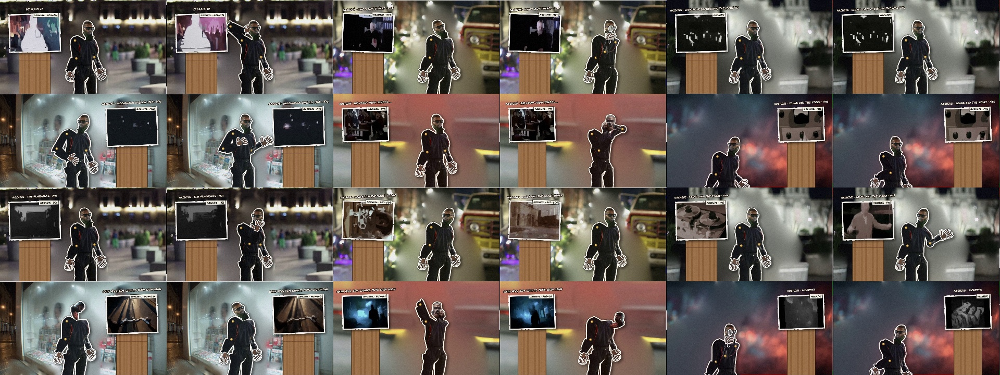

WYGWYL · Where You Go When You Leave · cel layer
Ink cels for the WYGWYL suite: the poet, from his own photographs, cut into a jointed paper puppet and set over the cineosis-lab cel cuts, with each patch's archive cel framed on a cardboard plinth and her reading on the soundtrack. The gestures come from her words, the heads from a bank of replacement heads cut from every photograph of him, and every patch is built from the lab's cel database.

CONSEQUENCE WORKS · Watson Hartsoe · built with Claude. The films are rendered from code; the archive footage is the cineosis-lab library's, credited inside each film.